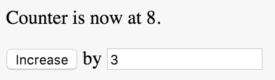

A Redux example
Learning by doingWe'll now walk through a simple Redux example app in order to internalise the basic Redux concepts.
We won't use React or any other dependencies.
Sections in this chapter
App idea
What are we going to build?
Let's make a simple counter app. The counter increases whenever the user clicks a button, by an amount controlled by an input. It should look something like this:

As we'll find this makes for a very tiny app, yet it will still touch on all the various aspects of Redux.
State shape
What should our data look like?
Now that we have an app idea, let's decide on the state shape for our app!
In Redux, all the app state is contained in one single object. One of the first things we need to do is therefore to design the shape of that state.
However, in our simple counter app, we only need to track one single thing - the current count. Thus the state for our app could simply be a single number!
But to make it somewhat less artificial, let's make it into an object like this:
{count: 7}
Initial state
Kicking things off
Having decided on a state shape, however simple, we can now define an initial state.
For our little app that only entails one single decision - at what number should we start the count?
Let's go with 0!
Now we can write our first line of code:
let initialstate = {count: 0};
Action shapes
What can happen?
Let's design the actions needed for our app idea!
In a Redux app, everything that affects app state is represented by an action object with...
- a mandatory
typeproperty - and eventual further data payload props.
Incrementing the counter is the only thing that happens in our app. Let's decide that the action describing this event looks like this:
{
type: 'INCREMENT',
by: 3
}
A side note - Normally we would isolate all string constants such as "INCREMENT" to a separate file, but in this simple example we'll live with having a single magic string like this.
Reducer
Introducing the heart
Now that we have designed the action shapes and the state shape we can move on to define our reducer!
Remember: a reducer in Redux lingo is simply a function that takes the current state and an action, and returns a new state:

The reducer in our app just needs to deal with a single action, namely INCREMENT.
When that action happens we create a new state with count increased by action.by:
let reducer = (state,action)=> {
switch(action.type){
case 'INCREMENT': return {count: state.count + action.by};
default: return state;
}
};
Two small comments to this code:
- Remember that we must always have a default case returning the current state, to deal with internal Redux startup actions.
- Since our reducer deals with just a single action it would be better phrased as an
if-else. We only used aswitchbecause that's what a reducer normally looks like.
Store
A house for the data
With the initial state and reducer in place, we can now create a store for our app state!
A store is instantiated using Redux.createStore:
let store = Redux.createStore(reducer,initialstate);
An alternative to providing an initialstate on store creation is to have a default return value inside the reducer.
However it can be valuable to explicitly define the full initial state in a single place.
Action creators
How are actions spawned?
Knowing the shape of the actions lets us define action creators to be consumed by our UI.
Only one single action creator is needed in our app:
let actionCreators = {
increment(amount) {
return {type: 'INCREMENT', by: amount};
}
};
We pass in an amount, and return an action shaped according to our previous decision.
Now we create a version of our action creators that is bound to our store, so they're easier to consume in our views:
let boundActionCreators = Redux.bindActionCreators(
actionCreators,
store.dispatch
);
UI
Designing the interface
Let's design the UI needed for our app idea!
To create our UI we translate our mental screenshot...
...to this html:
<body>
<p>Counter is now at <span id="num"></span>.</p>
<p>
<button id="incbtn">Increase</button>
<span> by </span>
<input type="number" id="amount" value=1 />
</p>
</body>
UI updater
data templating
Now that we know the state shape and the UI, we can define a UI updater function!
We need to update the UI depending on the current state which is passed in as an argument:
let updateUI = state => {
let element = document.getElementById("num");
element.innerHTML = state.count;
};
All we need to do is update the #num element with state.count.
In a React app this would rather be a render function that defined the whole UI instead of mutating existing DOM.
Interaction
connecting the user
Now we can introduce interaction through hooking up the action creators to the UI and dispatch the result to the store!
So what needs to happen when the user clicks the button?
- We must collect the increase value from the input field
- Then we create an action by passing the increase value to the Increment action creator
- We use a bound action creator so that the action is passed to the store
Here's the code:
let button = document.getElementById("incbtn");
button.addEventListener("click",()=> {
let input = document.getElementById("amount"),
increase = parseInt(input.value);
boundActionCreators.increment(increase);
});
Tying it together
Ship it!
We now have all the pieces we need to finalize our app!
There's only two things remaining to do:
- Make our UI updater run whenever the store is updated
- Run an initial rendering
It sounds easy, and it is easy! Here's the code:
store.subscribe(()=> { // <-- not called with state!
updateUI(store.getState());
});
updateUI(store.getState());
Note how the callback is not called with state, which you might expect! You have to explicitly get it if you need it.
You can play with this example in the Redux demo.
..wait, were we already done? Yep, that was it!
Note how already this simple example app demonstrate the unidirectional data flow:

Exercise 4
It's getting hot in here
You probably saw this coming - you now get to create your own Redux application!
Look for the Generator exercise in the course resources!